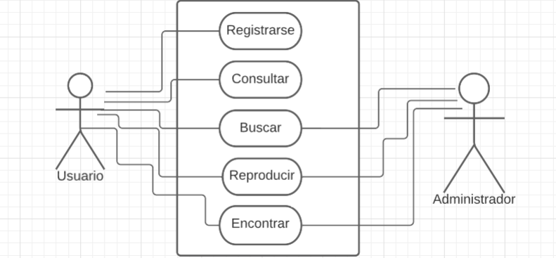
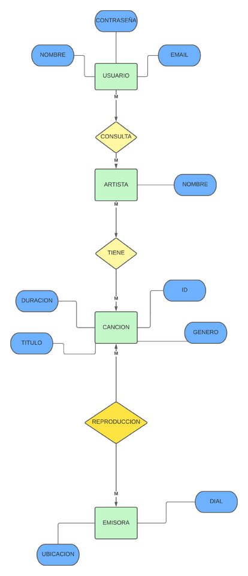
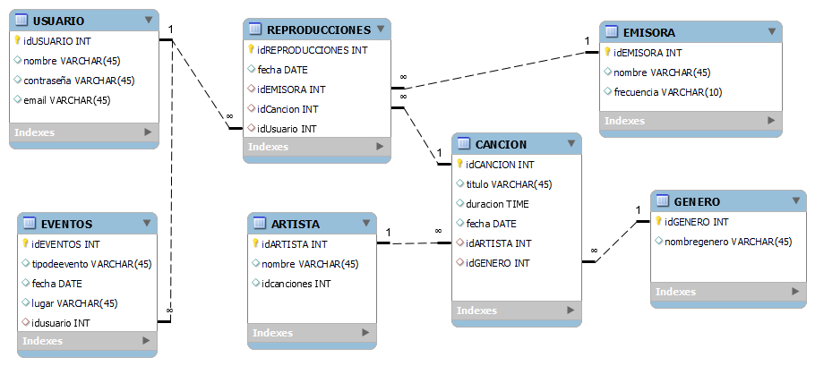

Documentación del proyecto (cronológicamente)
Nuestro primer acercamiento a esta idea fue gracias a una empresa encargada del monitoreo de canciones en radios y tv de colombia llamada "Decibeles colombia", esto gracias a un integrante del proyecto que nos proporcionó la informacion y la idea principal para poder desarrollarlo. Esta es una muestra de la base de datos que maneja la empresa de monitoreo que se nos otorgó de ejemplo:
Diagrama de casos de uso:
El diagrama de casos de uso es una representación gráfica que describe la interacción entre los stakeholders y el software. Se utiliza para comprender los requisitos funcionales del sistema y cómo los usuarios y el software acceden y se relacionan con estos requisitos. Es una herramienta fundamental en el análisis y diseño de sistemas de software, ya que ayuda a identificar las diferentes funciones que el sistema debe proporcionar, los actores involucrados y los escenarios de uso.
Modelo Entidad relación:
El modelo entidad-relación se emplea típicamente en el diseño de bases de datos, siguiendo reglas básicas de jerarquía de atributos para facilitar su implementación en el proyecto. Este modelo permite representar la estructura de los datos y las relaciones entre las entidades de manera visual.
Diagrama E/R
Diagrama de base de de datos
Nuestro primer diseño de base de datos del proyecto.
